V2 — earlier baseline. Start here → These five designs are the project owner’s current reference. Other prototypes and dated walkthroughs document supporting experiments and the design journey.
← Contributor tasks The design journey Full audit ↗ Latest V2.1 candidates · interactive FROM ANATOMY TO INTERFACE / SUPPORTING INLINE EXPERIMENT
A relationship unfolds. A recorded walkthrough of the current menu, private tools, public channels and email boundary—followed by the connection handoff and the nine companion contexts.
4 October 2026 · 23 captured states · agent-operated Chrome review · fictional content · no external delivery or participant results
Try the current design ↗ The evolutionary idea, made observable The octopus and humanity followed different branches. Our analogy asks whether SimpleX’s different foundations can lead to a different experience: a coordinating list, locally unfolding tools, retained work and deliberate disclosure.
Follow the actions below. Then judge the behaviour—not whether the interface resembles an animal.
Build the next iteration: three priorities ↗
Audit: promising, still incomplete The inline core holds within its page session. Drafts survived tool changes, folding and browser history. Channel reading stayed separate from private replies; selected email details crossed only after review.
The biggest continuity gap: new connection leaves the inline page for another study with a separate state model.Missing inline responsibilities: groups, profiles, scaled inbox search and a complete attachment lifecycle.Recovery remains speculative: reload clears work; real delivery, keyboards and device interruptions are untested.Space needs a harder test: long expanded tools share the scrolling list. Test short screens, real keyboards and enlarged text before adopting this layout.Read priorities, evidence and proposed next decisions ↗
The inline walkthrough 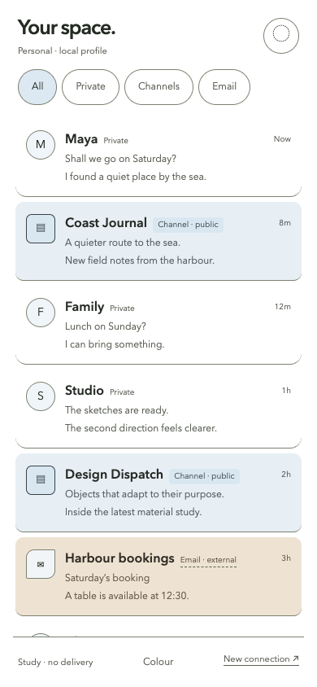
Recorded browser state · 390 × 844 CSS px 01 / INLINE
One menu, three audience types Eight entries; private, public channel and external email have text labels and distinct surfaces.
Explore this context ↗ Opening the context starts a new page session; the pictured fixture state is not restored.
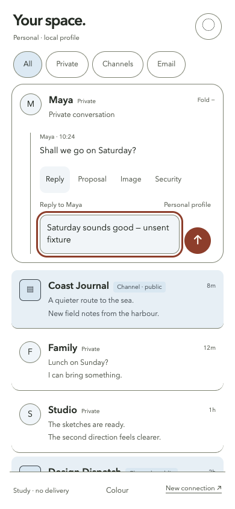
Recorded browser state · 390 × 844 CSS px 02 / INLINE
Open a relationship, keep the list Maya expands in place. Reply draft belongs to Maya.
Explore this context ↗ Opening the context starts a new page session; the pictured fixture state is not restored.
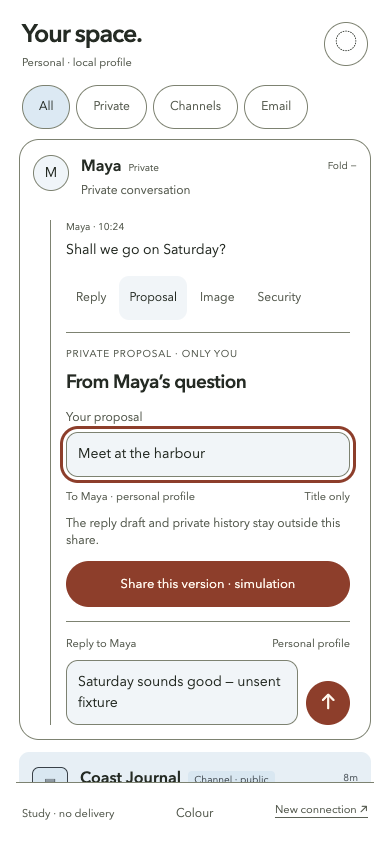
Recorded browser state · 390 × 844 CSS px 03 / INLINE
Private work before sharing Proposal and audience are shown beside the retained unsent reply.
Explore this context ↗ Opening the context starts a new page session; the pictured fixture state is not restored.
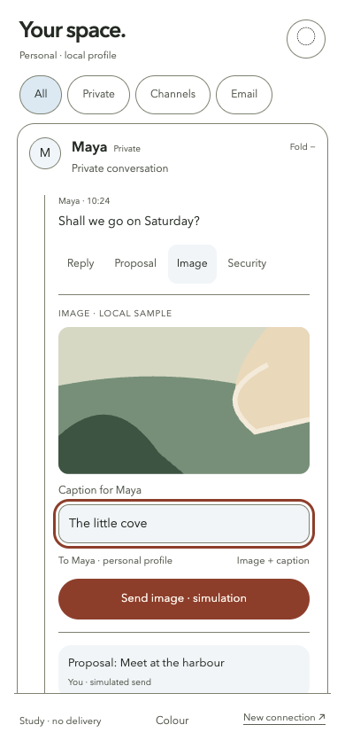
Recorded browser state · 390 × 844 CSS px 04 / INLINE
Image and caption have an audience Sample illustration; no picker or camera integration.
Explore this context ↗ Opening the context starts a new page session; the pictured fixture state is not restored.
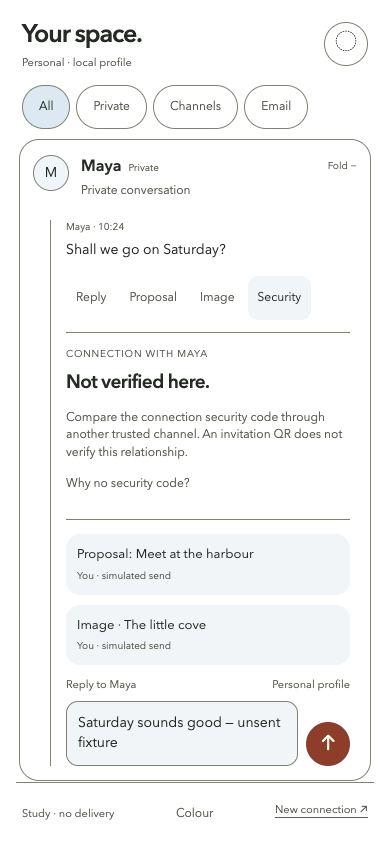
Recorded browser state · 390 × 844 CSS px 05 / INLINE
Inspect trust without implying verification No real security code; invitation and verification are explicitly different.
Explore this context ↗ Opening the context starts a new page session; the pictured fixture state is not restored.
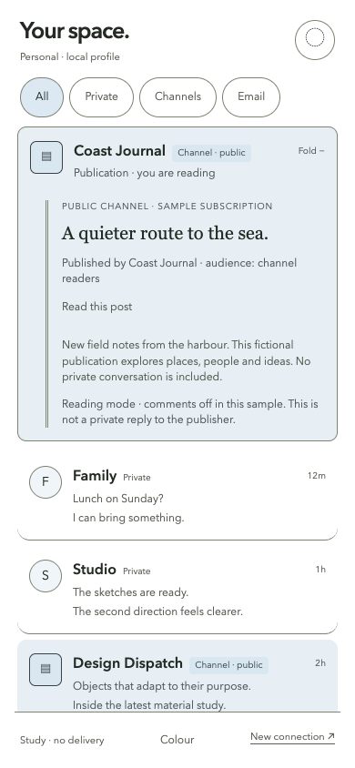
Recorded browser state · 390 × 844 CSS px 06 / INLINE
A publication is not a private conversation Public readers, reading mode and comments-off state are explicit.
Explore this context ↗ Opening the context starts a new page session; the pictured fixture state is not restored.
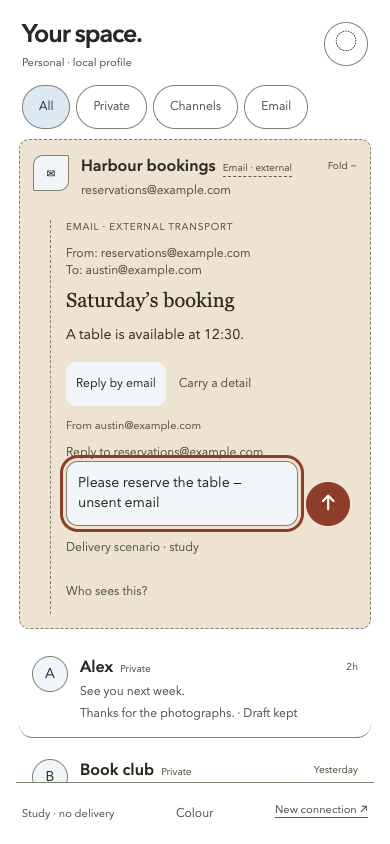
Recorded browser state · 390 × 844 CSS px 07 / INLINE
External email keeps its source Sender and email reply recipient are visible; no mailbox is connected.
Explore this context ↗ Opening the context starts a new page session; the pictured fixture state is not restored.
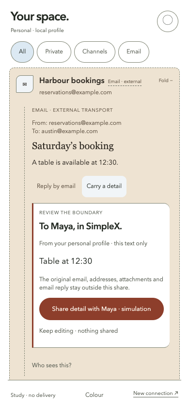
Recorded browser state · 390 × 844 CSS px 08 / INLINE
Review what crosses the boundary Only selected text will enter Maya’s chat; addresses, attachments and original email stay outside.
Explore this context ↗ Opening the context starts a new page session; the pictured fixture state is not restored.
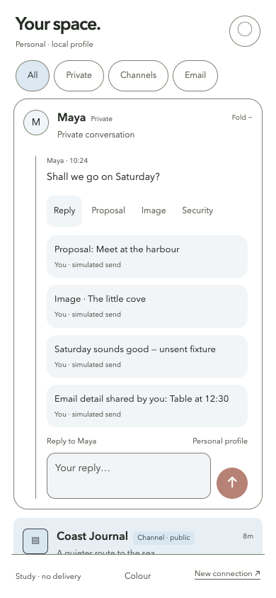
Recorded browser state · 390 × 844 CSS px 09 / INLINE
Selected detail arrives in Maya Only the reviewed text appears; transport remains explicit in the source.
Explore this context ↗ Opening the context starts a new page session; the pictured fixture state is not restored.
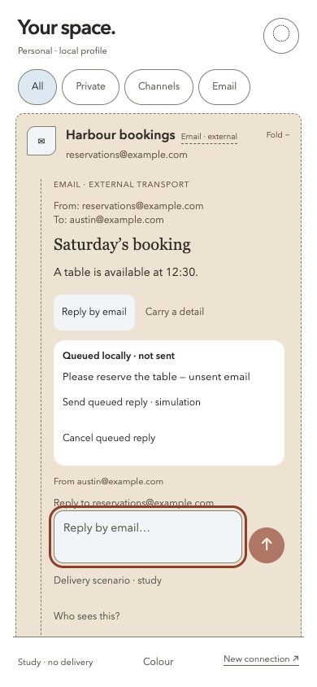
Recorded browser state · 390 × 844 CSS px 10 / INLINE
Queued is not sent Offline scenario queues locally.
Explore this context ↗ Opening the context starts a new page session; the pictured fixture state is not restored.
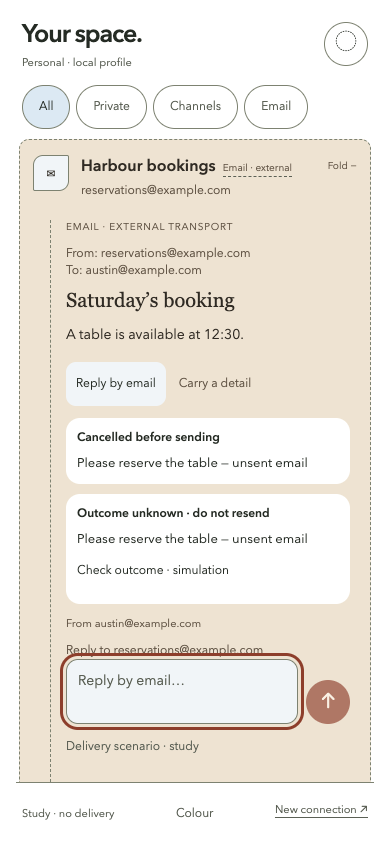
Recorded browser state · 390 × 844 CSS px 11 / INLINE
An uncertain outcome needs inspection Outcome unknown exposes check rather than a blind resend.
Explore this context ↗ Opening the context starts a new page session; the pictured fixture state is not restored.
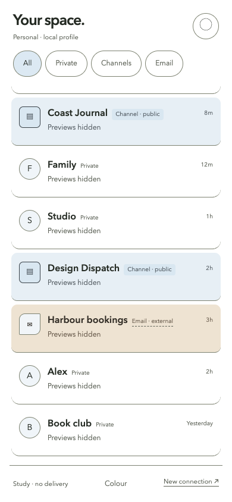
Recorded browser state · 390 × 844 CSS px 12 / INLINE
Selective visibility Quiet hides previews and folds active work; it is not authentication or device locking.
Explore this context ↗ Opening the context starts a new page session; the pictured fixture state is not restored.
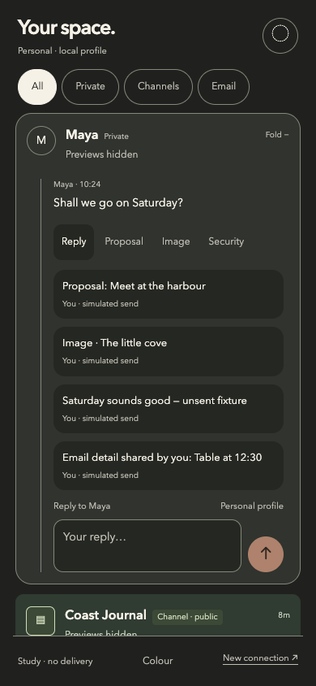
Recorded browser state · 390 × 844 CSS px 13 / INLINE
Alternate material, same behaviour Charcoal changes appearance while retaining the relationship state.
Explore this context ↗ Opening the context starts a new page session; the pictured fixture state is not restored.
Recorded browser state · 390 × 844 CSS px 14 / COMPANION
Connection handoff to the comparative study Inline menu leaves its page for the nine-context connection study; inline state is not shared.
Explore this context ↗ Opening the context starts a new page session; the pictured fixture state is not restored.
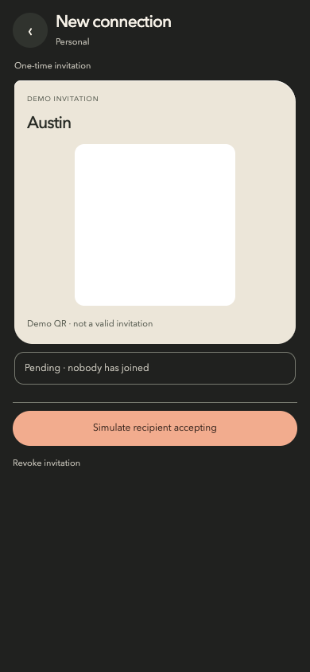
Recorded browser state · 390 × 844 CSS px 15 / COMPANION
Pending invitation is not connection Demo invitation shows disclosure and pending state.
Explore this context ↗ Opening the context starts a new page session; the pictured fixture state is not restored.
The companion contexts These separate screens are the comparison baseline. They show missing responsibilities, rather than proving those responsibilities already work inline.
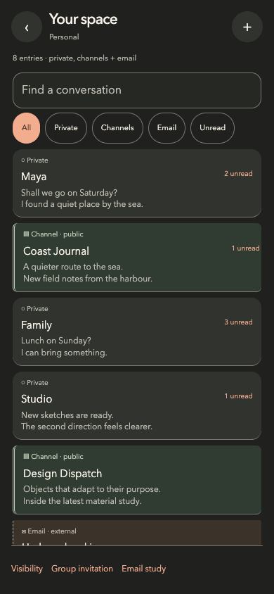
Recorded browser state · 390 × 844 CSS px 16 / COMPANION
Comparative context: home Separate nine-screen baseline; not equivalent to a completed inline implementation.
Explore this context ↗ Opening the context starts a new page session; the pictured fixture state is not restored.
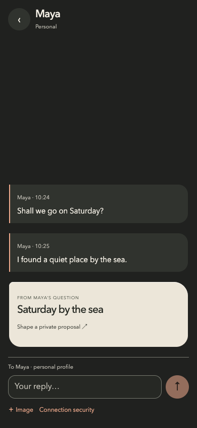
Recorded browser state · 390 × 844 CSS px 17 / COMPANION
Comparative context: chat Separate nine-screen baseline; not equivalent to a completed inline implementation.
Explore this context ↗ Opening the context starts a new page session; the pictured fixture state is not restored.
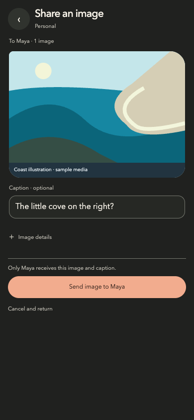
Recorded browser state · 390 × 844 CSS px 18 / COMPANION
Comparative context: photo Separate nine-screen baseline; not equivalent to a completed inline implementation.
Explore this context ↗ Opening the context starts a new page session; the pictured fixture state is not restored.
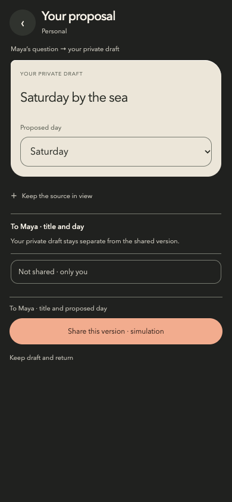
Recorded browser state · 390 × 844 CSS px 19 / COMPANION
Comparative context: plan Separate nine-screen baseline; not equivalent to a completed inline implementation.
Explore this context ↗ Opening the context starts a new page session; the pictured fixture state is not restored.
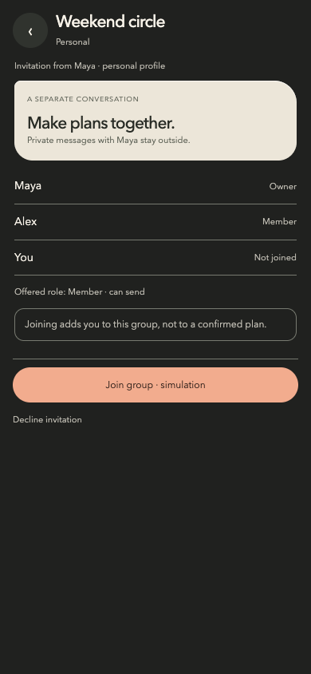
Recorded browser state · 390 × 844 CSS px 20 / COMPANION
Comparative context: group Separate nine-screen baseline; not equivalent to a completed inline implementation.
Explore this context ↗ Opening the context starts a new page session; the pictured fixture state is not restored.
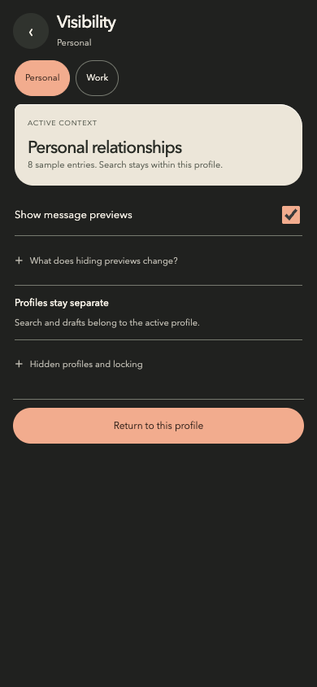
Recorded browser state · 390 × 844 CSS px 21 / COMPANION
Comparative context: privacy Separate nine-screen baseline; not equivalent to a completed inline implementation.
Explore this context ↗ Opening the context starts a new page session; the pictured fixture state is not restored.
Recorded browser state · 390 × 844 CSS px 22 / COMPANION
Comparative context: trust Separate nine-screen baseline; not equivalent to a completed inline implementation.
Explore this context ↗ Opening the context starts a new page session; the pictured fixture state is not restored.
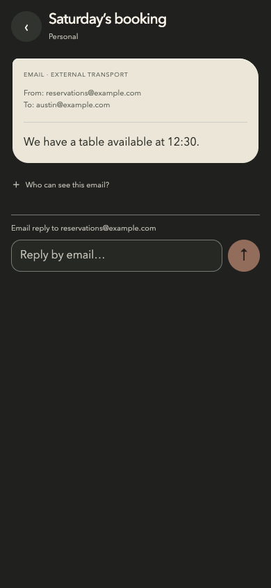
Recorded browser state · 390 × 844 CSS px 23 / COMPANION
Comparative context: email Separate nine-screen baseline; not equivalent to a completed inline implementation.
Explore this context ↗ Opening the context starts a new page session; the pictured fixture state is not restored.